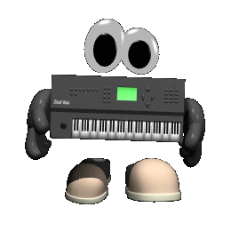

|
|
Here you will find info regarding the things that I do.
Be it repairing or modifying electronic audio equipment,
programming, vintage computing, art or music.
Rest assured some of it will be here.
There is also the possibility of things not listed above,
but everything will be clearly labelled for your enjoyment.

For information regarding repairs, modifications and servicing of electronic audio equipment,
please click the contact link above for more details.
Current personal projects include:
-Studiomaster Diamond mixing console overhaul and modifications
-Numerous ongoing Eurorack builds
-Stripboard 808 clone
-Mutron Biphase clone (own design clone)
-Windows XP Computer build for Cubase SX and Reason 3
Atari 520ST Refurb.
|
 ++!!WELCOME TO THE NEW AND IMPROVED ROOTS ELECTRONICS WEBSITE!!++
++!!WELCOME TO THE NEW AND IMPROVED ROOTS ELECTRONICS WEBSITE!!++